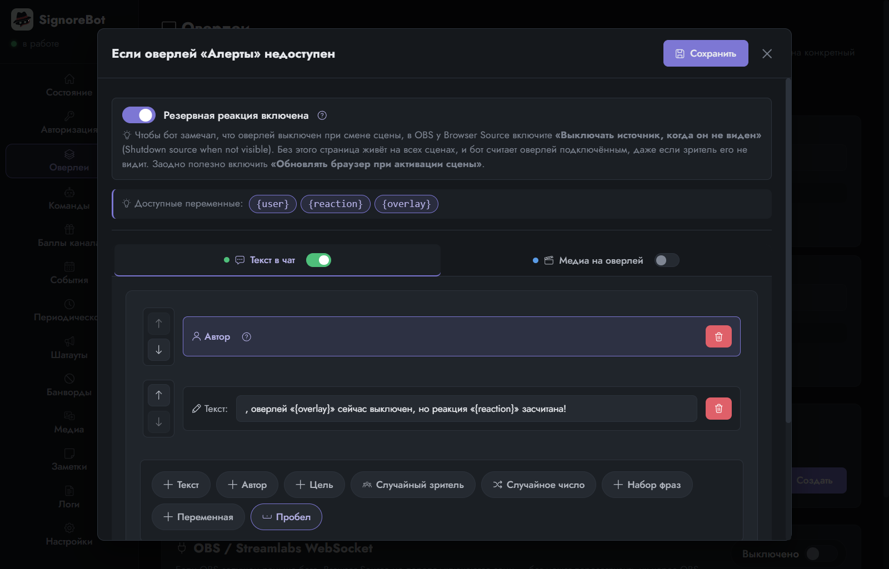
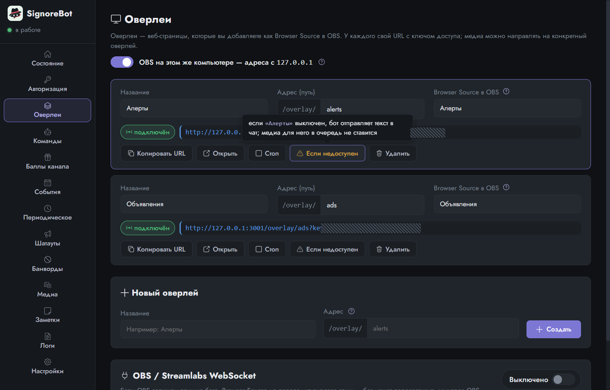
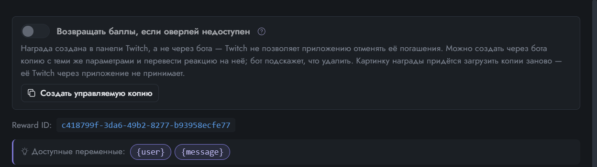
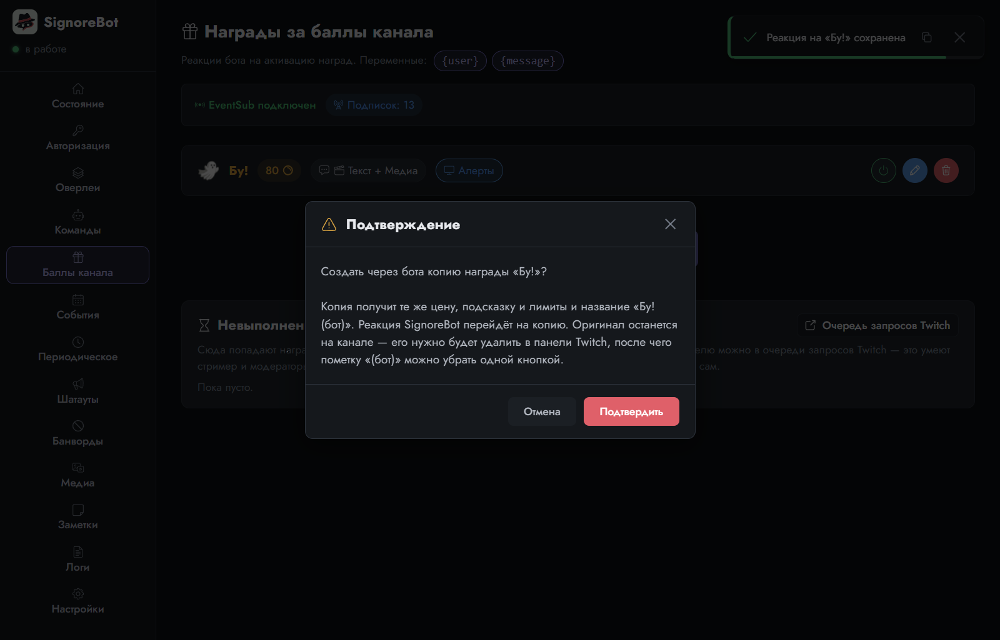
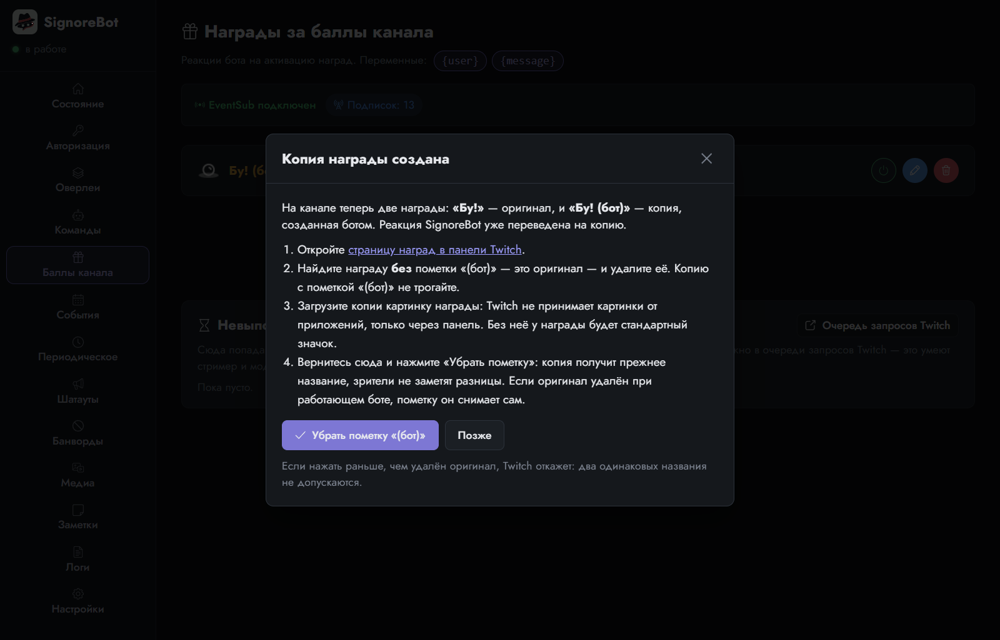
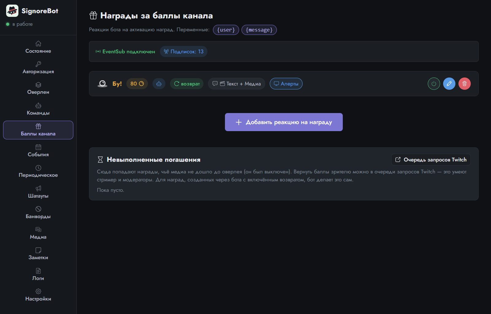
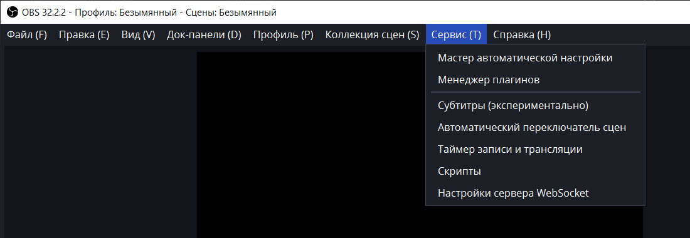

Урок 9 из 9
Полезные мелочи
Основы позади: команды, оверлеи, награды, события, таймеры, шатауты и переменные. Напоследок две вещи, без которых можно жить, но которые выручают на живом стриме, и короткий список «если что-то не так».
Если оверлей недоступен
Ситуация: зритель потратил баллы на «Бу!», а призрак не появился. В OBS сейчас другая сцена, где источника с оверлеем нет, или OBS вообще закрыт. Медиа для выключенного оверлея бот держит в очереди полминуты, а потом отбрасывает. Зритель остался и без реакции, и без баллов, а вы об этом даже не узнаете, пока не заглянете в логи.
На карточке оверлея для этого есть кнопка Если недоступен. Она открывает резервную реакцию: обычную реакцию, которая срабатывает вместо основной, когда оверлей не подключён. Например, текст в чат о том, что оверлей выключен, но реакция засчитана. Или то же медиа на другой оверлей. Составляется она в знакомом редакторе, а включается отдельным переключателем, так что заготовку можно держать наготове и выключенной.


Чтобы бот замечал «выключенный» источник при смене сцены, в OBS у Browser Source включите «Выключать источник, когда он не виден». Иначе страница живёт на всех сценах, и бот считает оверлей подключённым, даже если зритель его не видит.
Вернуть баллы за впустую потраченную награду
Резервная реакция утешает словами, а можно вернуть зрителю сами баллы. У Twitch есть погашение (redemption) — запись о том, что награда активирована; пока она не закрыта, стример или модератор может отменить её, и баллы вернутся. Все невыполненные погашения бот собирает внизу вкладки Баллы канала с кнопкой в очередь запросов Twitch, где их закрывают вручную.
Автоматически возвращать баллы бот тоже умеет, но с оговоркой, которую придумал не он: Twitch разрешает отменять погашения только тому приложению, которое награду создало. Награда «Бу!» заведена в панели Twitch, поэтому переключатель Возвращать баллы, если оверлей недоступен у неё неактивен. Выход рядом — Создать управляемую копию: бот заводит на канале такую же награду от своего имени, переводит реакцию на неё и подсказывает, какую из двух удалить в панели Twitch.



После копии всё идёт само. Оверлей был недоступен — баллы вернулись. Всё прошло хорошо — погашение закрыто, и очередь запросов не копится. Единственное, чего бот сделать не может, — загрузить копии картинку награды: Twitch принимает её только через свою панель.

Если что-то не так
Оверлеи «не подключены», хотя OBS открыт
Обычно OBS запустили раньше бота, и страница ещё не переподключилась. Бот сам заметит это и покажет жёлтый баннер, а в OBS у Browser Source достаточно нажать «Обновить». Чтобы бот делал это сам, включите связь с OBS на вкладке «Оверлеи». Адрес и пароль берутся в самом OBS. Лежат они не в «Настройках», как ожидаешь, а в меню «Сервис»: пункт «Настройки сервера WebSocket». В английской версии это меню называется Tools.

Бот просит авторизоваться снова
Twitch отзывает вход после 30 дней без запусков, это нормально: повторите вход по коду, как в уроке «Авторизация». Если такое случается часто, проверьте, не запущены ли две копии программы: начиная с 1.0.0 вторая копия просто показывает окно первой.
Страница Twitch не реагирует на «Authorize»
Чаще всего мешает блокировщик рекламы: он режет запросы страницы согласия, и кнопка остаётся серой. Приостановите его для twitch.tv или откройте ссылку из «Скопировать ссылку» в окне без расширений.
Twitch отвечает, что шатаут нельзя
Шатауты работают только на живом стриме, не чаще раза в две минуты, а одному каналу — раз в час. Бот разбирает эти ответы сам и пишет в лог, что произошло.
Мало места на системном диске
Настройки → Папка данных: выберите папку на другом диске и нажмите «Перенести и перезапустить». Старая папка не удаляется, пока вы не убедитесь, что всё на месте.
Что где хранится
Windows: %APPDATA%\ru.aumphaadr.signorebot\, Linux: ~/.local/share/ru.aumphaadr.signorebot/ — настройки, медиа, резервные копии, логи. Вход в Twitch — в защищённом хранилище системы. Экспорт настроек из панели никогда не включает вход и ключ оверлеев.
Нашли ошибку или чего-то не хватает — напишите на GitHub. Приложите файл с вкладки Логи → Экспорт: по нему видно, что произошло.